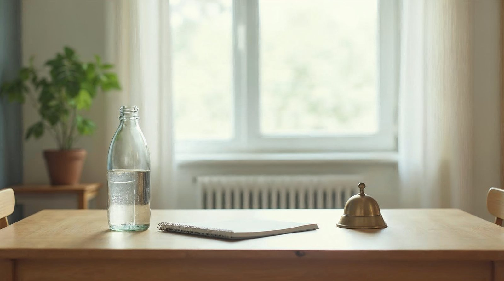
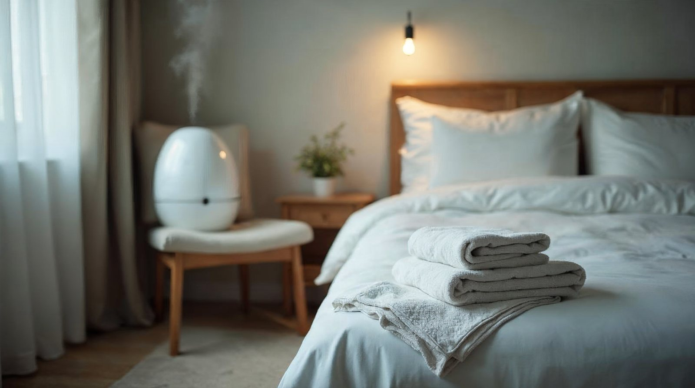
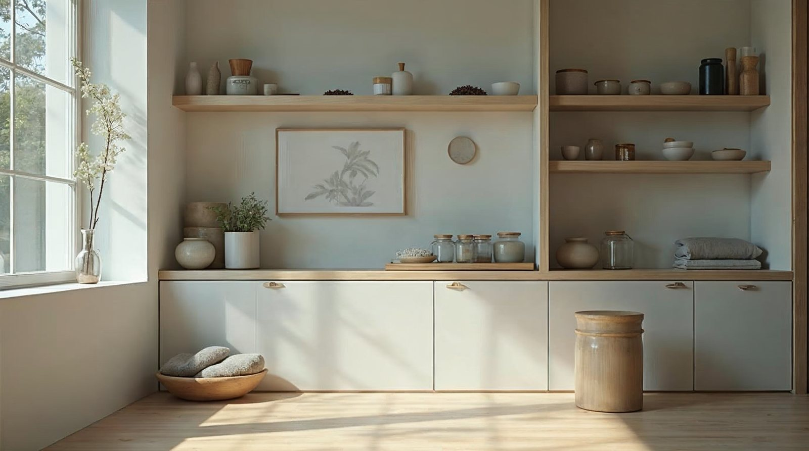
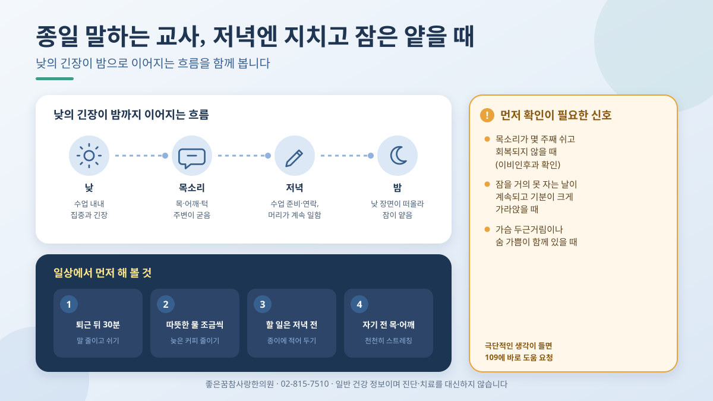

이종호 한의사 감수좋은꿈참사랑한의원 대표원장 (한의사 면허번호 19769)발행 2026-11-23 · 수정 2026-11-26
이 글의 차례
- 왜 이런 불편이 생길 수 있나요
- 왜 말을 많이 한 날일수록 잠이 얕을까요?
- 지친 것과 잠을 못 이루는 것, 어떻게 나눠 볼까요?
- 먼저 이렇게 여쭙니다
- 일상에서 먼저 해 볼 수 있는 것
- 퇴근 뒤 저녁, 이런 순서로 닫아 보세요
- 상황별 예시
- 목소리를 아끼면 저녁 기운도 달라질까요?
- 학기 초, 시험 기간처럼 바쁜 시기에는
- 새벽에 깼을 때는 어떻게 하면 좋을까요?
- 스스로 점검해 보세요
- 점심과 오후 간식도 저녁 기운과 이어져 있나요?
- 한의원에서 함께 살필 수 있는 경우
- 첫 방문은 이렇게 진행됩니다
- 얼마나 지켜보고 언제 상담할까요
- 이렇게 기록해 오시면 상담이 쉬워집니다
- 이런 증상은 먼저 확인이 필요합니다
- 관련 글
교사는 하루 종일 목소리를 쓰고 학생들의 반응을 살피며 긴장을 유지합니다. 퇴근하면 몸은 녹초인데 잠자리에 누우면 낮의 장면이 떠올라 잠이 얕다는 분이 많습니다. 이럴 때는 잠만 따로 보기보다 낮의 긴장이 저녁까지 어떻게 이어지는지를 먼저 살펴봅니다.
목소리를 쓰는 일은 단순히 말을 많이 하는 것이 아니라, 교실 뒤까지 들리게 소리를 키우고 여러 학생의 반응을 한꺼번에 살피는 일이라 몸 전체가 긴장한 채로 하루를 보내게 됩니다. 저녁에 기운이 빠지는 느낌과 잠이 얕은 느낌이 함께 온다면 둘을 따로 떼어 보지 말고, 수업이 많았던 날과 적었던 날의 하루 흐름 위에 나란히 놓고 보면 실마리를 찾기 쉽습니다.
교사 가운데에는 말을 많이 해서 피곤한 것쯤으로 여기고 넘기는 분이 많습니다. 하지만 이런 저녁이 한 학기 내내 이어지면 주말에도 피로가 풀리지 않고, 방학이 되어서야 겨우 잠이 돌아오는 흐름이 해마다 되풀이되기도 합니다.
왜 이런 불편이 생길 수 있나요
- 수업 내내 집중과 긴장을 유지하면 퇴근 뒤에도 몸이 바로 쉬는 상태로 넘어가지 못하는 경우가 있습니다.
- 목소리를 오래 쓰면 목과 어깨, 턱 주변이 굳어 누웠을 때 불편함으로 이어질 수 있습니다.
- 저녁에 수업 준비나 학부모 연락이 이어지면 잠들기 직전까지 머리가 일하는 상태로 남기 쉽습니다.
- 점심을 급하게 먹거나 거른 채 오후 수업을 이어 가면 저녁 무렵 기운이 한꺼번에 떨어지는 느낌이 들 수 있습니다.
- 겨울철 난방으로 교실 공기가 건조해지면 목이 쉽게 마르고 칼칼해져 저녁까지 불편이 남기도 합니다.
- 한의학에서는 낮의 긴장과 피로가 밤의 잠으로 이어지는 흐름도 함께 살핍니다.
왜 말을 많이 한 날일수록 잠이 얕을까요?
수업은 말만 하는 일이 아니라, 설명하면서 동시에 학생들의 표정을 읽고 다음 질문을 준비하는 일입니다. 이렇게 오래 깨어 있던 긴장은 종이 울린다고 바로 꺼지지 않아, 누워도 잠이 얕고 작은 소리에도 깨기 쉽습니다.
한의학에서는 말을 많이 하면 기운이 소모된다고 보고, 소모된 상태에서 긴장까지 이어지면 마음이 편히 내려앉지 못해 잠이 얕아진다고 설명합니다. 그래서 목소리와 기운, 긴장과 잠을 한 흐름으로 함께 살핍니다.
지친 것과 잠을 못 이루는 것, 어떻게 나눠 볼까요?
- 퇴근 뒤 바로 쓰러지듯 자고 새벽에 일찍 깬다면, 저녁 이른 시간의 쪽잠과 잠자리에 드는 시각을 먼저 살핍니다.
- 몸은 피곤한데 누우면 교실 장면이 떠올라 한참 뒤척인다면, 잠들기 전까지 이어지는 업무와 생각의 정리를 먼저 봅니다.
- 잠은 그럭저럭 자는데 아침에 목이 잠기고 몸이 무겁다면, 목소리를 쓰는 방식과 물 마시는 습관, 침실의 건조함을 함께 봅니다.
먼저 이렇게 여쭙니다
- 하루에 수업이나 상담을 몇 시간 정도 하시나요?
- 퇴근 뒤 바로 쉬는 편인가요, 수업 준비를 이어서 하나요?
- 잠들기 전 학생이나 학부모 일이 자주 떠오르나요?
- 자다가 깨는 시각이 대체로 정해져 있나요?
- 목이나 어깨가 뻐근해 잠자리에서 불편한가요?
- 점심은 몇 분 정도 앉아서 드시나요?
- 방학 때와 학기 중의 잠은 어떻게 다른가요?

일상에서 먼저 해 볼 수 있는 것
- 퇴근 뒤 30분은 말을 줄이고 조용히 쉬는 시간 두기
- 쉬는 시간마다 따뜻한 물을 몇 모금씩 마시고, 오후 늦은 커피는 줄이기
- 수업 중 마이크를 쓸 수 있으면 쓰고, 교실 뒤쪽 학생에게는 소리를 키우기보다 가까이 가서 말하기
- 다음 날 할 일은 저녁 식사 전에 종이에 적어 두고 잠자리에서는 내려놓기
- 잠들기 전 목을 천천히 좌우로 기울이고 어깨를 끌어내리는 스트레칭하기
- 주말에도 일어나는 시각을 평일과 한 시간 안쪽으로 맞추기
퇴근 뒤 저녁, 이런 순서로 닫아 보세요
앞의 방법을 하나의 순서로 묶어 두면 지키기가 한결 쉽습니다. 학교를 나서기 전에 다음 날 할 일을 세 줄로 적어 책상 위에 두고 나오고, 귀갓길에는 강의나 뉴스 대신 조용한 음악이나 바깥 소리를 들으며 걸어 보세요.
집에 와서 30분은 말을 줄이고 따뜻한 물을 마시며 쉽니다. 잠들기 한 시간 전에는 학부모 메시지와 업무 메신저를 닫고, 잠자리에서는 내쉬는 숨을 길게 하며 몸의 힘을 뺍니다.
모든 순서를 다 지키지 않아도 됩니다. 수업이 많았던 날만이라도 두세 가지를 골라 해 보세요. 같은 순서를 되풀이하면 몸이 그 순서를 '이제 쉴 시간'이라는 신호로 받아들이기 쉬워집니다.
상황별 예시
- 예를 들어 5~6교시 수업이 몰린 날마다 새벽 1~2시에 한 번씩 깨는 경우, 수업이 적은 날과 많은 날의 잠을 2주 동안 나란히 적어 보고, 수업이 많은 날일수록 퇴근 뒤 30분 말 쉬는 시간을 먼저 지켜 봅니다.
- 예를 들어 담임을 맡아 저녁 9시 무렵까지 학부모 메시지에 답하느라 잠자리에서도 대화 내용이 맴도는 경우, 답장하는 시간을 저녁 식사 뒤 한 번으로 묶고 그 뒤에는 알림을 꺼 두는 것부터 시작합니다.
- 예를 들어 학기 말 생활기록부 작성으로 밤 11시까지 노트북 앞에 앉아 있다가 바로 눕는 경우, 작성은 잠들기 한 시간 전에 끊고 남은 분량은 다음 날 아침 일찍 이어서 하는 식으로 나눠 봅니다.
- 예를 들어 퇴근하자마자 소파에서 한 시간씩 잠들었다가 정작 밤에는 말똥말똥한 경우, 저녁 이른 시간의 긴 쪽잠이 밤잠을 밀어내고 있는지 살핍니다. 졸리면 20분 안쪽으로만 쉬고, 가볍게 걷거나 씻으며 저녁 졸음을 넘겨 봅니다.
목소리를 아끼면 저녁 기운도 달라질까요?
목소리를 크게, 오래 쓰는 일에는 생각보다 많은 기운이 듭니다. 목소리를 조금 아끼는 방법을 익혀 두고, 그런 날 저녁 기운이 어떤지 살펴보세요.
- 수업 시작 전 조용해질 때까지 기다렸다 말을 시작해, 소음 위로 소리를 키우는 시간을 줄입니다.
- 설명이 긴 부분은 판서나 화면, 활동지로 나눠 말하는 시간을 덜어 냅니다.
- 목에 힘을 주어 소리를 짜내기보다 배에서 숨을 내쉬며 말하는 연습을 해 봅니다.
- 수업이 연달아 있는 날에는 한 시간쯤은 모둠 활동이나 개별 과제로 말하는 시간을 줄여 봅니다.
학기 초, 시험 기간처럼 바쁜 시기에는
학기 초에는 학생 파악과 상담, 각종 서류가 몰리고, 시험 기간과 학기 말에는 채점과 성적 처리가 이어집니다. 이런 시기에는 평소보다 저녁 업무가 늘고 잠이 더 흔들리기 쉽습니다.
바쁜 시기를 미리 달력에 표시해 두고, 그 주에는 저녁 약속을 줄이고 잠자리에 드는 시각만큼은 지키는 쪽으로 계획해 보세요. 바쁜 시기가 끝난 뒤 하루쯤은 일부러 아무 일도 하지 않는 저녁을 두는 것도 좋습니다. 바쁜 시기에 잠이 흔들리는 것은 자연스러운 일이니, 그 시기가 끝난 뒤 얼마나 빨리 돌아오는지를 함께 지켜보세요.
새벽에 깼을 때는 어떻게 하면 좋을까요?
잠이 얕은 분들은 새벽에 한 번 깨고 나면 그날 수업 장면이나 내일 해야 할 일이 바로 떠올라 다시 잠들기 어렵다고 하십니다. 이때 휴대전화를 집어 학급 단체방이나 학부모 메시지를 확인하면 머리가 한순간에 출근 모드로 돌아가기 쉽습니다.
깼을 때는 시계를 몇 번씩 들여다보지 말고, 누운 채로 내쉬는 숨을 들이쉬는 숨보다 길게 몇 번 이어 보세요. 그래도 한참 동안 잠이 오지 않으면 잠자리에서 일어나 어두운 조명 아래에서 조용히 앉아 있다가, 졸음이 다시 오면 눕는 편이 좋습니다.
떠오른 일이 자꾸 맴돈다면 머리맡에 둔 종이에 한 줄만 적고 내려놓습니다. 다음 날 아침 그 메모를 보면 대부분은 출근해서 처리해도 되는 일이라는 것을 알게 되고, 그 경험이 쌓이면 새벽에 떠오르는 생각의 무게도 조금씩 가벼워집니다.
새벽에 깬 날 아침에는 잠이 모자랐다는 생각에 첫 수업 전부터 마음이 무거워지기 쉽습니다. 그런 날일수록 커피를 평소보다 늘리기보다, 쉬는 시간에 창가에서 햇빛을 잠깐 쬐고 따뜻한 물을 몇 모금 마시며 오전을 넘겨 보세요. 그날 저녁 잠자리에 드는 시각은 평소대로 두는 것이 다음 날 리듬을 지키는 데 도움이 될 수 있습니다.
점심을 먹은 뒤 교무실 자리에서 5분쯤 눈을 감고 말없이 앉아 있는 것만으로도 오후 수업을 넘기기가 한결 수월하다는 분이 있습니다.

스스로 점검해 보세요
- 수업이 많은 날과 적은 날의 잠이 눈에 띄게 다르다.
- 퇴근 뒤에도 한 시간 넘게 수업 준비나 업무 연락을 이어 간다.
- 잠자리에 누우면 그날 교실 장면이나 학부모와의 대화가 자주 떠오른다.
- 저녁 무렵 목이 쉬거나 칼칼하고, 어깨와 턱이 뻐근하다.
- 퇴근 직후 소파에서 쪽잠을 자는 날이 일주일에 세 번 이상이다.
- 오후 늦게 커피나 단 음료로 버티는 날이 많다.
- 방학이나 긴 연휴가 되면 잠이 눈에 띄게 편해진다.
점심과 오후 간식도 저녁 기운과 이어져 있나요?
급식 지도나 학생 상담으로 점심을 10분 만에 먹거나 거르는 날이 많다면, 오후 수업이 끝날 무렵 기운이 한꺼번에 떨어지기 쉽습니다. 그 빈자리를 오후 늦은 커피나 단 간식으로 채우면 밤에는 잠들기가 늦어지기 쉽습니다.
점심은 짧더라도 앉아서 꼭꼭 씹어 먹고, 오후에 출출하면 견과류나 우유처럼 가벼운 것을 드셔 보세요. 커피는 점심 직후 한 잔으로 정해 오후 2시 전에는 마치고, 퇴근 뒤 저녁 식사는 잠들기 3시간 전쯤 가볍게 마쳐 보세요.
한의원에서 함께 살필 수 있는 경우
- 말을 많이 한 날마다 잠이 얕아지는 경우 하루의 긴장과 목·어깨의 굳은 정도를 함께 살핍니다.
- 저녁이 되면 기운이 크게 떨어지는 경우 식사 시각과 피로의 흐름을 함께 살핍니다.
- 학교 일이 머리에서 떠나지 않는 경우 긴장과 호흡의 깊이를 함께 살핍니다.

첫 방문은 이렇게 진행됩니다
- 맥 짚기와 이야기 듣기: 모든 분의 맥을 먼저 짚어 몸의 긴장과 지친 정도를 살피고, 맥을 보면서 하루 수업 시수와 퇴근 시각, 저녁에 하는 일, 잠드는 모습과 깨는 시각을 충분히 여쭙습니다. 목소리 상태와 목·어깨 불편도 함께 여쭙니다.
- 혀·배 살피기: 필요하다고 판단될 때 혀(설진)와 배(복진)를 더해 봅니다.
- 생활 기록 함께 보기: 적어 오신 잠 기록과 수업 일정을 나란히 놓고, 잠이 얕아지는 날의 공통점을 함께 찾습니다.
- 방향 정하기: 상태에 맞춰 침이나 한약 상담 등을 정하고, 목·어깨가 많이 굳어 있으면 그 부분도 함께 살핍니다.
- 귀가 전 정리: 집에서 지켜볼 점과 다음 진료 때 확인할 일을 알려 드립니다. 담당 원장이 바뀌는 날에도 이전 기록을 보고 이어서 진료합니다.
얼마나 지켜보고 언제 상담할까요
- 퇴근 뒤 말 쉬는 시간, 화면 끄는 시각, 잠들기 전 스트레칭 같은 저녁 순서를 2주 정도 이어 가며 잠든 시각과 깬 횟수를 적어 봅니다.
- 저녁 순서를 지켜도 수업이 많은 날마다 잠이 크게 흔들린다면, 그 요일의 수업 배치나 업무를 조금 나눌 수 있는지도 함께 살펴봅니다.
- 2~3주가 지나도 잠이 얕거나 자주 깨는 날이 일주일에 사흘 이상이고, 주말에도 잠이 돌아오지 않는다면 상담을 받아 보세요.
이렇게 기록해 오시면 상담이 쉬워집니다
- 수업이 많았던 날과 적었던 날의 잠든 시각, 깬 횟수
- 퇴근 뒤 잠들기 전까지 한 일(수업 준비, 휴대전화, 운동 등)
- 목이 쉬거나 어깨가 뻐근했던 날
- 복용 중인 약이나 영양제 이름
- 학기 초, 시험 기간처럼 바빴던 주와 그렇지 않은 주의 차이
기록은 아침에 일어나 한 줄로 남기면 충분합니다. 시간표 옆에 적어 두면 어느 요일, 어느 시기에 잠이 흔들리는지 한눈에 보입니다.
하루 종일 학생들에게 목소리와 마음을 내어 주고 돌아온 저녁입니다. 한 번에 다 바꾸지 않아도 괜찮습니다. 다음에 오시면 수업이 많았던 날 밤에 몇 번 깨셨는지부터 여쭙겠습니다.
이런 증상은 먼저 확인이 필요합니다
- 목소리가 2주 넘게 쉬고 회복되지 않거나, 삼킬 때 아프고 불편한 경우(이비인후과 확인)
- 스스로를 해칠 생각이 들면 ☎ 109로 바로 연락하세요.
이런 신호가 있으면 한의원보다 가까운 병원이나 응급실을 먼저 찾으세요.
관련 글
- 서서 수업하는 교사는 목과 어깨, 목소리가 함께 지칠 때 어떻게 살피나요?
- 강의를 많이 해서 목소리가 자주 쉬는 분은 어떻게 관리하면 좋을까요?
- 평일 내내 긴장하다 주말만 되면 몸살처럼 아플 때는 어떻게 살피나요?

여쭙는 것
- 하루에 수업이나 상담을 몇 시간 정도 하시나요?
- 퇴근 뒤 바로 쉬는 편인가요, 수업 준비를 이어서 하나요?
- 잠들기 전 학생이나 학부모 일이 자주 떠오르나요?
생활에서 해 볼 것
- 퇴근 뒤 30분은 말을 줄이고 조용히 쉬는 시간 두기
- 쉬는 시간마다 따뜻한 물을 몇 모금씩 마시고, 오후 늦은 커피는 줄이기
- 수업 중 마이크를 쓸 수 있으면 쓰고, 교실 뒤쪽 학생에게는 소리를 키우기보다 가까…
한의원에서 함께 살필 것
- 말을 많이 한 날마다 잠이 얕아지는 경우 하루의 긴장과 목·어깨의 굳은 정도를 함께…
- 저녁이 되면 기운이 크게 떨어지는 경우 식사 시각과 피로의 흐름을 함께 살핍니다.
- 학교 일이 머리에서 떠나지 않는 경우 긴장과 호흡의 깊이를 함께 살핍니다.
먼저 확인이 필요한 신호
- 목소리가 2주 넘게 쉬고 회복되지 않거나, 삼킬 때 아프고 불편한 경우(이비인후과…
- 스스로를 해칠 생각이 들면 109로 바로 연락하세요.
한눈에 보는 표
| 구분 | 핵심 |
|---|---|
| 여쭙는 것 | 하루에 수업이나 상담을 몇 시간 정도 하시나요? 퇴근 뒤 바로 쉬는 편인가요, 수업 준비를 이어서 하나요? |
| 생활에서 해 볼 것 | 퇴근 뒤 30분은 말을 줄이고 조용히 쉬는 시간 두기 쉬는 시간마다 따뜻한 물을 몇 모금씩 마시고, 오후 늦은 커피는 줄이기 |
| 한의원에서 함께 살필 것 | 말을 많이 한 날마다 잠이 얕아지는 경우 하루의 긴장과 목·어깨의 굳은 정도를 함께 살핍니다. 저녁이 되면 기운이 크게 떨어지는 경우 식사 시각과 피로의 흐름을 함께 살핍니다. |
| 먼저 확인이 필요한 신호 | 목소리가 2주 넘게 쉬고 회복되지 않거나, 삼킬 때 아프고 불편한 경우(이비인후과 확인) 스스로를 해칠 생각이 들면 109로 바로 연락하세요. |
자주 묻는 질문
방학이 되면 잠이 나아지는 편인데 학기 중만 문제일까요?
학기 중 긴장과 생활 리듬이 잠에 영향을 주는 경우가 많습니다. 학기 중과 방학의 잠을 나란히 적어 오시면 이야기가 구체적이 됩니다.
저녁에 수업 준비를 꼭 해야 하는데 어떻게 하나요?
준비는 잠들기 한 시간 전까지 마치고, 이후에는 화면과 업무를 멀리하는 시간을 두는 것을 권합니다.
목이 자주 쉬는 것도 함께 볼 수 있나요?
네. 목을 쓰는 시간과 물 마시는 습관, 목·어깨 긴장을 함께 여쭙니다. 목이 쉬었던 날을 잠 기록과 함께 적어 오시면 수업이 많았던 날과 나란히 놓고 보기 쉽습니다.
퇴근 뒤에도 진료를 받을 수 있나요?
좋은꿈참사랑한의원은 평일 09:30~20:00(점심 13:00~14:00), 토·일·공휴일 09:30~15:00(점심시간 없음)에 진료합니다.
좋은꿈참사랑한의원은 재진 때 지난번 이야기부터 이어서 여쭙니다. 진료시간과 예약은 오시는 길에서 확인하세요.
어디서 상담받을 수 있나요?
좋은꿈참사랑한의원은 서울 동작구 만양로2길 2 신성빌딩 3층·5층(서울 동작구 상도동, 7호선 상도역 3번 출구 근처)에 있습니다. 한의사 3명(이종호 대표원장, 조영기 수석진료원장, 정원영 진료원장)이 진료합니다. 진료시간은 평일 09:30~20:00(점심 13:00~14:00), 토·일·공휴일 09:30~15:00이며, 방문 전 전화로 확인을 권합니다. 예약은 네이버 예약, 카카오톡 상담, 전화 02-815-7510로 받습니다.
이 글은 일반적인 건강 정보이며 개인의 진단이나 치료를 대신하지 않습니다. 증상이 있거나 복용 중인 약이 있다면 진료를 통해 확인하세요. 치료 효과는 개인마다 다를 수 있습니다.
작성 기준: 일반적으로 알려져 있는 건강 정보를 참고해 정리했습니다(대표원장 감수). 증상 기록은 1~2주 동안 하루 1회, 비슷한 시간에 적어 오시면 지난 상태와 비교하기 쉽습니다.